Auswertung, Darstellung und Interpretation
Organisatorisches
Semesterplan
| Sitzung | Datum | Sitzungstitel |
|---|---|---|
| 1 | 02.11.2020 | Warum wissenschaftliche Psychologie |
| 2 | 28.11.2020 29.11.2020 | Hypothesen und der Prozess der Hypothesenprüfung |
| 3 | 28.11.2020 29.11.2020 | Experimentelles Vorgehen |
| 4 | 28.11.2020 29.11.2020 | Literaturrecherche |
| 5 | 28.11.2020 29.11.2020 | Operationalisieren und Messen |
| 6 | 12.12.2020 13.12.2020 | Experimentelle Versuchspläne |
| 7 | 12.12.2020 13.12.2020 | Störvariablen im Experiment |
| 8 | 12.12.2020 13.12.2020 | Nicht-experimentelle Versuchspläne |
| 9 | 12.12.2020 13.12.2020 | Material und Stichprobe |
| 10 | 23.1.2021 24.1.2021 | Auswertung, Darstellung und Interpretation |
| 11 | 23.1.2021 24.1.2021 | Ethische Probleme im Versuch |
| 12 | 23.1.2021 24.1.2021 | Publikationsprozess |
| 13 | wird noch bekannt gegeben | Vorstellung der Gruppenarbeiten |
| 14 | wird noch bekannt gegeben | Klausurvorbereitung |
Wiederholung
Prinzip des Hypothesentestens
Empirie
Bekanntes Beispiel:
Therapie und Wartegruppe, nach 5 Wochen Treatment oder Warten Messen der Depressivität:
Hat die Intervention funktioniert?
Hat die Intervention funktioniert?
Vorsicht!
Eine einfache Aussage über unsere Stichprobe ist uninteressant.
Externe Validität usw. müssen wir als versuchsplanerisch gegeben annehmen, eigentlich interessant ist die allgemeine Aussage, ob die Intervention zu einer Änderung der Depressivität führt, also, etwas anders formuliert, ob sich die Verteilung der Depressivitätswerte nach der Intervention von der Verteilung der Normal-Population unterscheidet.
Die inhaltliche Hypothese lautet deswegen:
Die depressive Symptomatik verringert sich durch die Intervention.
Gibt es einen Unterschied und wenn ja, wie groß ist dieser? Und wie könnte man diesen Unterschied statistisch untersuchen?
kleiner Exkurs: Verteilungen
Wir betrachten jetzt die Mittelwerte der Gruppen, nicht die Originalwerte. Unser Experiment sieht dann zum Beispiel so aus:
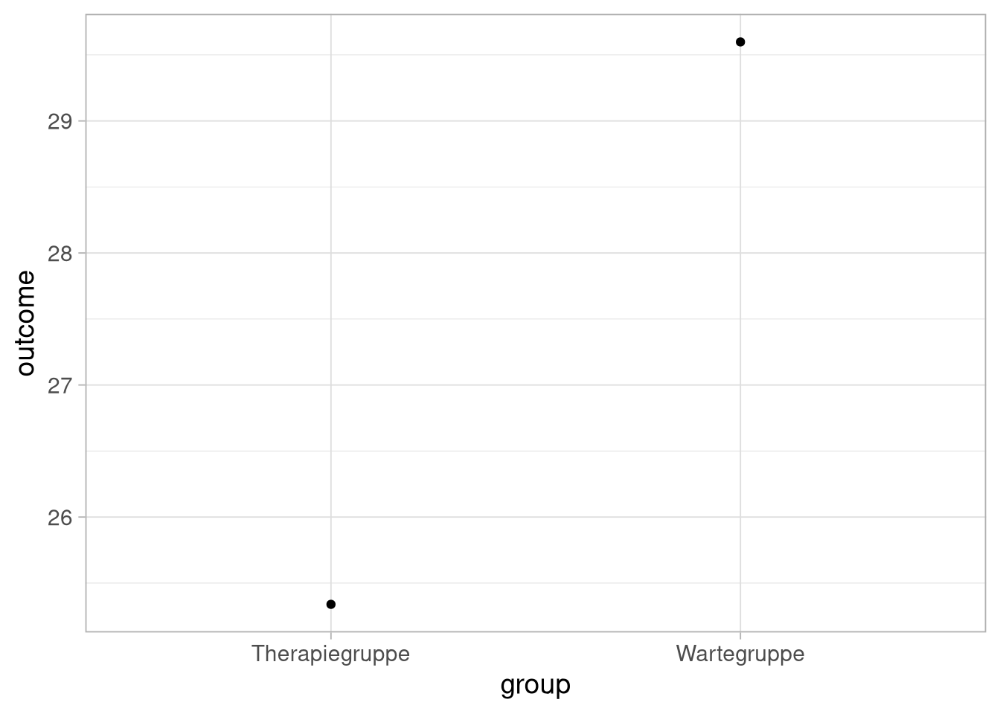
Da wir in unserer Messung aber auch den uns schon bekannten Zufallsfehler haben, wird sich nicht jedes mal exakt dieses Bild ergeben, wenn wir das Experiment zum Beispiel 500 mal durchführen, könnten die Mittelwerte dieser Durchläufe das folgende Bild ergeben:
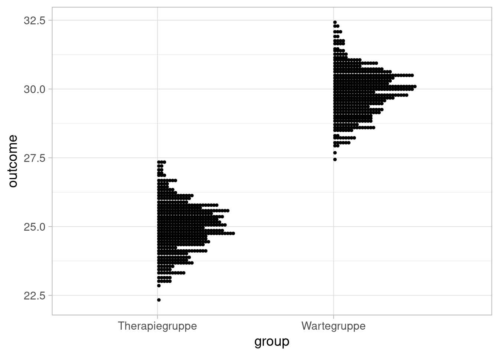
Ein bisschen anders dargestellt sieht das so aus:
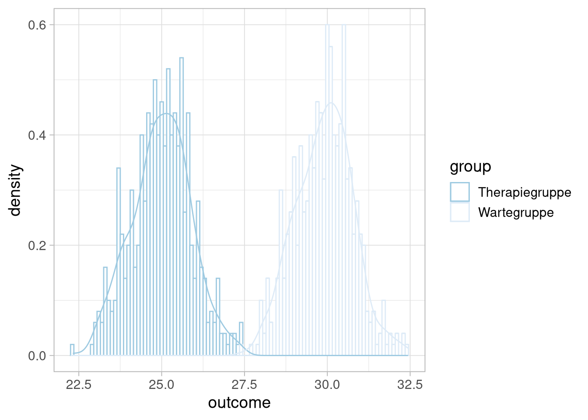
Was praktischerweise ziemlich doll einer Normalverteilung ähnelt:
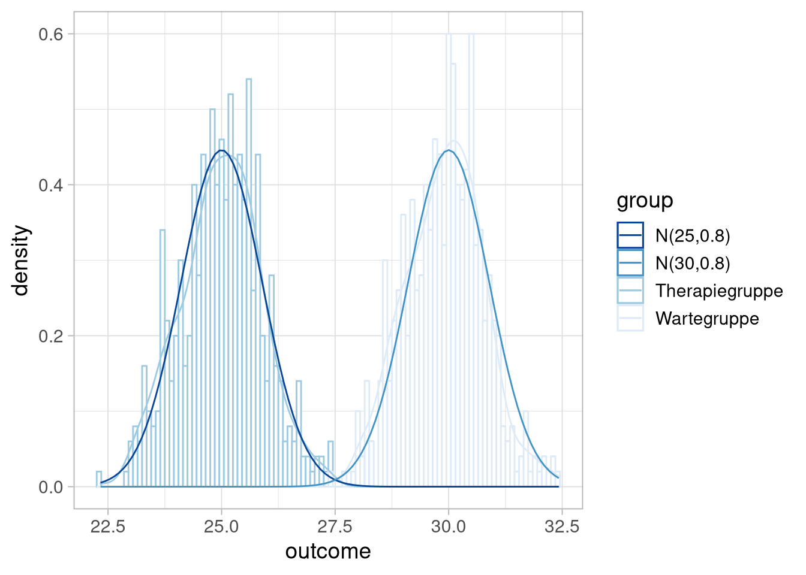
Wir nutzen diese Ähnlichkeit um die Heuristik zu benutzen, dass wir keinen Unterschied in den Gruppen mehr zu zeigen versuchen, sondern einen Unterschied in den Verteilungen, aus denen die Gruppenwerte gezogen wurden.
Problem:
Wir wissen nicht, wie die wahre Verteilung der Werte aussieht.
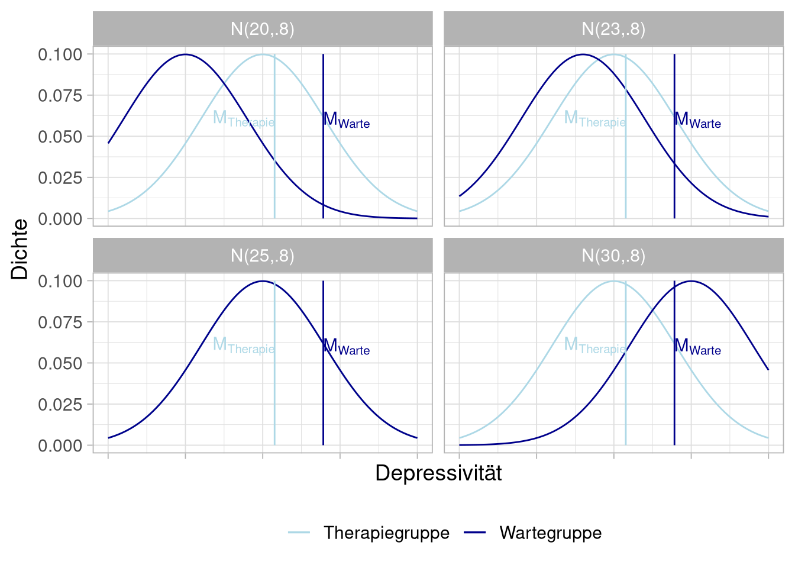
Lösung: Statistischer Hypothesentest
Folgende Überlegung:
Wir versuchen nicht, einen Unterschied zu zeigen, sondern versuchen, die Wahrscheinlichkeit sich fälschlicherweise für die Annahme eines Unterschieds zu entscheiden, klein zu halten.
Wir müssen also aus unseren Daten eine Statistik bilden, über die wir Wahrscheinlichkeits-Aussagen für den Fall treffen können, dass kein Unterschied besteht.
Die interessante Frage im Beispiel ist, ob die Wartegruppen-Population einen höheren Erwartungswert (und damit eine “weiter rechts liegende” Verteilung) hat als die Interventionsgruppen-Population. Anders ausgedrückt: ist die Differenz der Erwartungswerte größer als 0?
Im Beispiel gelten folgende Voraussetzungen:
- Varianzen sind (der Einfachheit halber) bekannt und gleich
- Variablen sind normalverteilt
- Stichproben sind unabhängig und gleich groß (N=20)
Dieser ist bei 0-Differenz \(N(0,1)\)-verteilt.
Beispiel
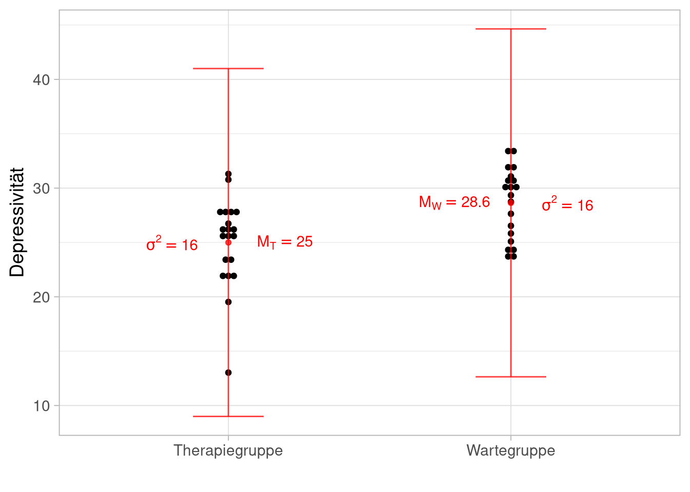
Der Wert unserer Teststatistik ist also:
\(z_{emp}={28.1-25.3 \over \sqrt{{ 16 \over 20 } + { 16 \over 20}}} = 2.21\)
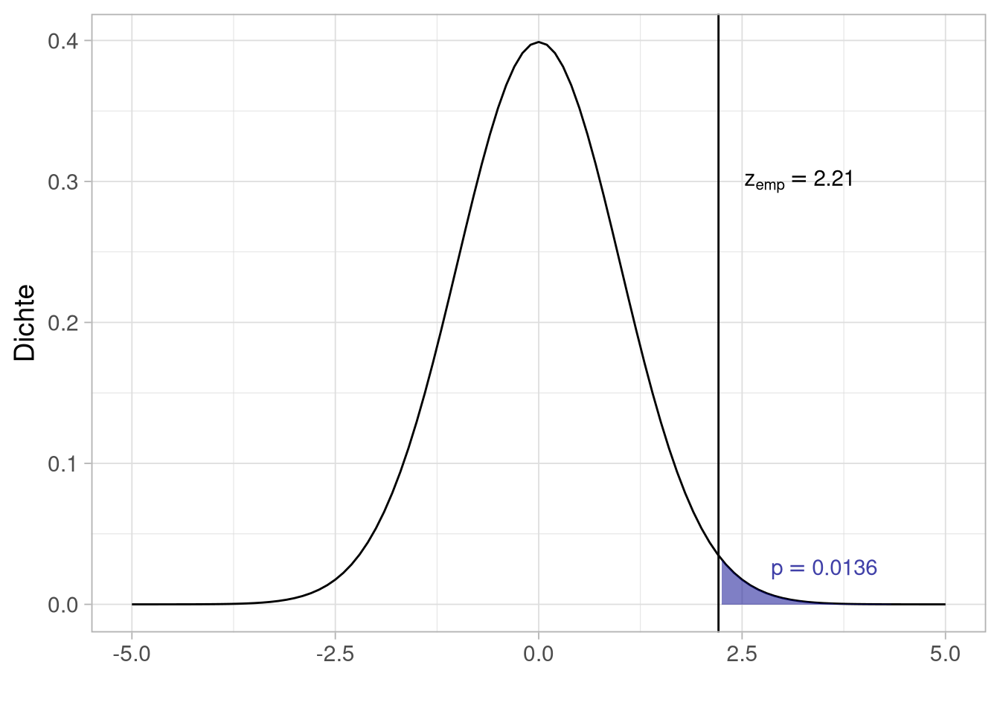
Nehmen wir unsere Hypothese, dass die Therapie zu niedrigerer Depressionssymptomatik führt, an?
Prinzip des Hypothesentestens
Da wir uns guten Gewissens gegen die \(H_0\) entscheiden wollen, legen wir eine Obergrenze für den Fehler 1. Art fest:
| Entscheidung für | |||
| Nullhypothese | Alternativhypothese | ||
| Tatsächlich gilt | Nullhypothese | Fehler 2. Art | |
| Alternativhypothese | Fehler 1. Art | ||
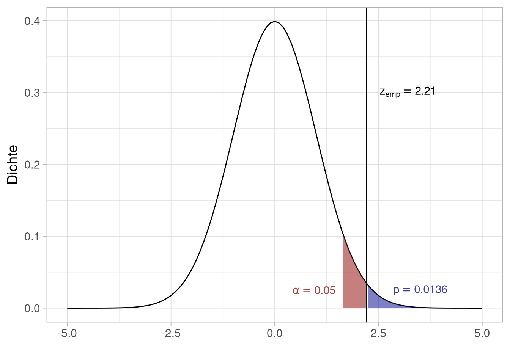
In der Tabelle ist aber noch ein Fehler 2. Art / \(\beta\)-Fehler aufgeführt.
| Entscheidung für | |||
| Nullhypothese | Alternativhypothese | ||
| Tatsächlich gilt | Nullhypothese | Fehler 2. Art | |
| Alternativhypothese | Fehler 1. Art | ||
Können wir zu diesem Aussagen treffen?
Möglichkeiten, um \(\beta\) zu verkleinern und die Power zu vergrößern
- N vergrößern \(\rightarrow\) Verteilungen werden schmaler
- Effektgröße erhöhen \(\rightarrow\) Verteilungen rutschen auseinander
- größeres \(\alpha\) wählen \(\rightarrow \beta\) wird automatisch kleiner
Wie sehen statistische Hypothesen aus?
Statistische Hypothesen
Wie sehen statistische Hypothesen aus?
Das kommt auf den Versuchsplan, die Fragestellung und das gewählte statistische Verfahren an. Ein paar Beispiele:
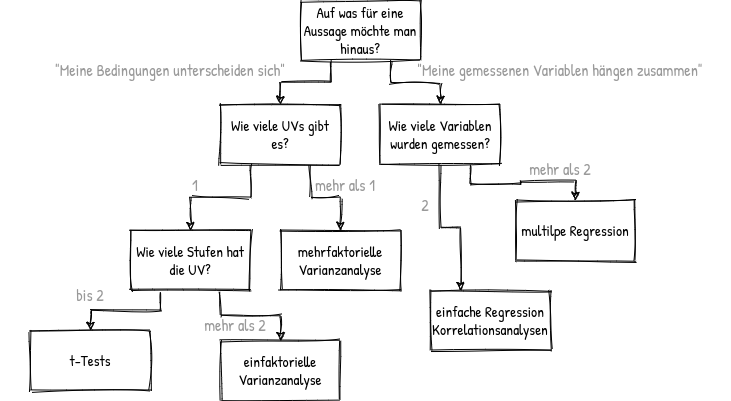
t-Test
Typisches Hypothesenpaar:
\[\text{H}_0: \mu_{\text{1}} \leq \mu_{\text{2}}\] \[\text{H}_1:\mu_{\text{1}} > \mu_{\text{2}}\]
Typische Darstellungen:
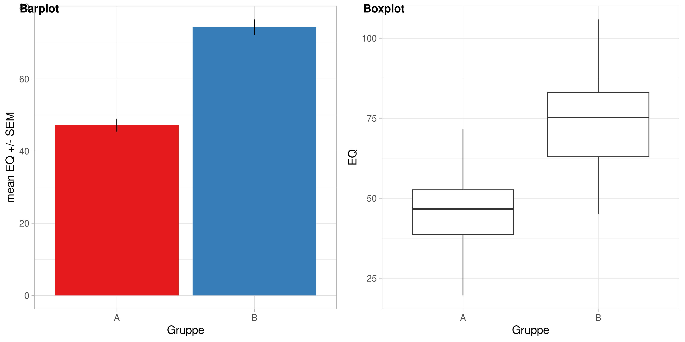
einfaktorielle Varianzanalyse
Typisches Hypothesenpaar:
\[\text{H}_0: \mu_{\text{1}} = \mu_{\text{2}} = \mu_{\text{3}}\] \[\text{H}_1:\text{nicht } \text{H}_0\]
Typische Darstellungen:
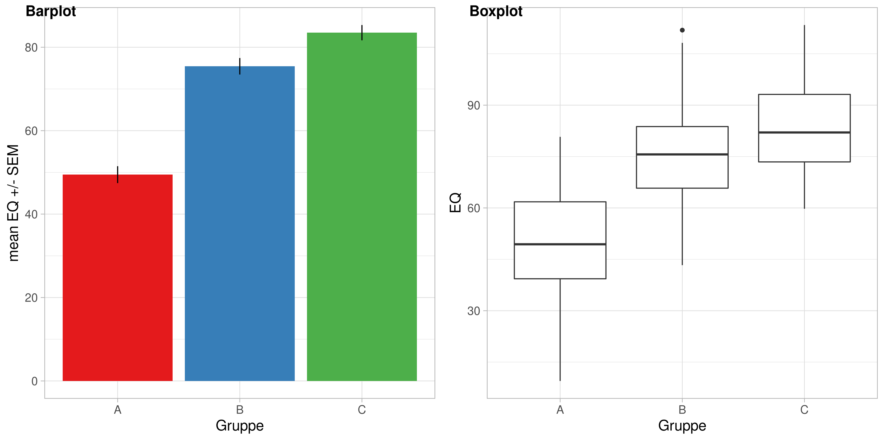
mehrfaktorielle Varianzanalyse
Wird mit jedem zusätzlichen Faktor komplizierter, deswegen hier nur der 2-faktorielle Fall.
Typische Nullhypothesen:
\[\text{H}_{0A}: \mu_{1\cdot} = \mu_{2\cdot} = \cdots = \mu_{j\cdot}\] \[\text{H}_{0B}: \mu_{\cdot 1} = \mu_{\cdot 2} = \cdots = \mu_{\cdot k}\] \[\text{H}_{0I}: \forall {\mu}_{jk} \text{ gilt}: {\mu}_{jk} = {\mu}_{j\cdot} + {\mu}_{\cdot k} - \mu\]
Typische Darstellungen:
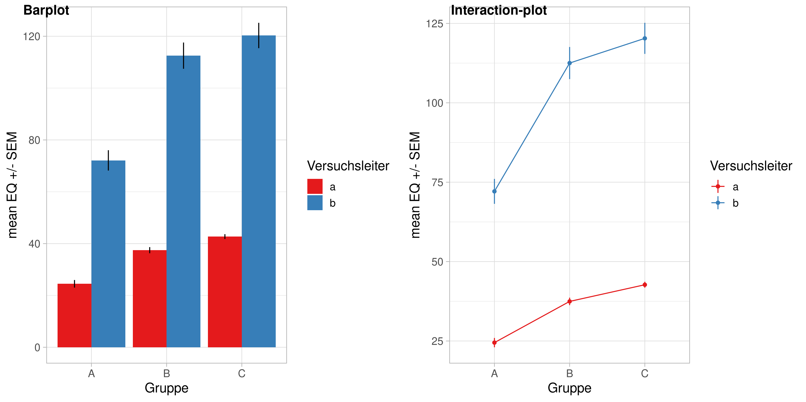
Korrelationen / einfache Regression
Typisches Hypothesenpaar
\[\text{H}_0: \rho_{X,Y} \leq 0\] \[\text{H}_1: \rho_{X,Y} > 0\]
Typische Darstellungen:
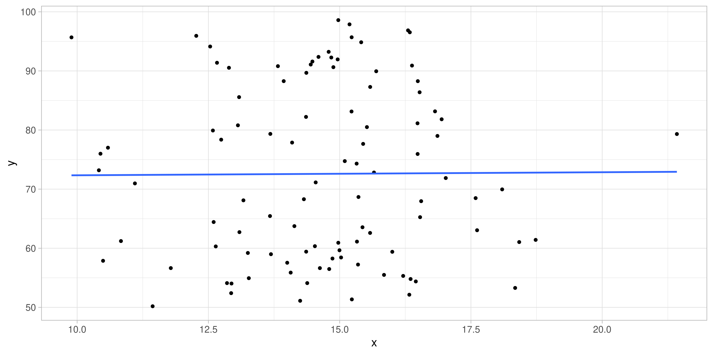
Ergebnisdarstellung

Ergebnisdarstellung
Übung
Übung
Wird man in Klausuren besser, wenn man vorher LSD nimmt? \[\text{H}_0: \mu_{\text{LSD}} \leq \mu_{\text{Placebo}}\] \[\text{H}_1: \mu_{\text{LSD}} > \mu_{\text{Placebo}}\]
Gibt es einen Zusammenhang zwischen der Exzentrik von Frisuren und dem Ausmaß der Psychopathie nach Hare? \[ \text{H}_0: \rho_{Frise,PP} \leq 0 \] \[\text{H}_1: \rho_{Frise,PP} > 0\]
Verbessert sich bei Kindern mit ADHS unter Gabe von Methylphenidat (vs. Placebo) die Blau-Gelb-Diskrimination, aber nicht die Rot-Grün-Diskrimination?
\[\text{H}_0: \mu_{\text{BG, MPH}} -\mu_{\text{BG, Placebo}} \leq \mu_{\text{RG, MPH}} -\mu_{\text{RG,Placebo}}\] \[\text{H}_1: \mu_{\text{BG, MPH}} -\mu_{\text{BG, Placebo}} > \mu_{\text{RG, MPH}} -\mu_{\text{RG, Placebo}}\]
Stimmt es, dass sich die Unfallhäufigkeit von roten und silbernen Autos nicht unterscheidet?
| Farbe | kein Unfall | Unfall |
|---|---|---|
| rot | 10000 | 300 |
| silber | 70000 | 210 |
\[\text{H}_0: \rho_{Autofarbe,Unfallrate} \leq 0\]
Test auf Nullhypothese ist nicht in der gleichen Form möglich, da wir den Fall der Nullhypothese brauchen um eine Vertielung zu haben über die wir Wahrscheinlichkeitsaussagen treffen können.